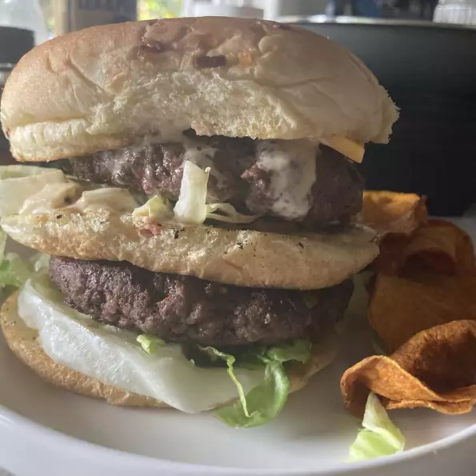

Big Mac Clone

A very delicious, authentic, and most importantly great clone of a Big Mac® from McDonald's®.
This dish takes about 15 minutes to prepare and cooks for 14 minutes with a serving of 2.
Per serving: 2395 calories; protein 51.7g; carbohydrates 82.6g; fat 208.6g; cholesterol 218.2mg; sodium 2986.5mg.
Ingredients
- ⅔ pound ground beef (85% lean)
- 2 cups mayonnaise
- 2 tablespoons prepared yellow mustard
- 2 tablespoons sweet pickle relish
- 1½ teaspoons white wine vinegar, or more to taste
- 1 teaspoon onion powder
- 1 teaspoon garlic powder
- 1 teaspoon ground paprika
- 4 hamburger bun bottoms
- 2 hamburger bun tops
- 2 tablespoons minced onion, or to taste
- ½ cup shredded lettuce, or to taste
- 2 tablespoons dill pickle slices, or to taste
- 2 slices American cheese
- salt and ground black pepper to taste
Steps
- Shape ground beef into 4 flat patties that will fit the hamburger buns. Place them on a tray lined with waxed paper; transfer to the freezer.
- Mix mayonnaise, mustard, pickle relish, white wine vinegar, onion powder, garlic powder, and paprika in a bowl to make sauce. Refrigerate for 10 minutes.
- Preheat a large skillet over medium heat. Toast buns in batches until lightly golden, 1 to 2 minutes.
- Layer some of the sauce, 1 tablespoon minced onion, 2 tablespoons lettuce, and pickles on 2 bottom buns. Layer some of the sauce and remaining 1 tablespoon minced onion, 2 tablespoons lettuce, and American cheese on the other bottom buns.
- Season patties with salt and pepper. Cook in the hot skillet 2 at a time until browned, 3 to 4 minutes per side. Place 1 patty over each bottom bun; stack and cover with top buns.